SYSEN 5470 · Assignments
A Weekly Rhythm.
Three Weeks. One Report at a Time.
Every Monday at 9 a.m. you submit the same four things, three weeks running — and finish with three short reports on a network you chose.
Why weekly? Network science is a habit, not a one-shot. The Monday rhythm keeps each week's load small and gives hard ideas time to sit. Submit early if you like — there's no prize for waiting.
This week's sketches
Photos or screenshots of your hand-drawn sketchpad prompts for the week — sketching first is how you see the structure before code can hide it. Its own submission.
▾ See an example submission▴ Hide example
Example · a strong sketchpad submission
A phone photo of real paper is perfect — this one's digital so it stays crisp. What earns the check: labeled nodes, many edges, color used to carry meaning (here a highlighted route, a closed station, and the detour), and a sentence reading the structure. We grade completion and that you engaged with the structure — not artistry.
Last week's lab answers
One Learning Check answer per interactive lab you did last week — e.g. LC1: B, LC2: C, or a screenshot. Completion-based. Submit it together with Item 3 (your code-lab answers) in one document — there's a single Canvas spot for the two.
▾ See an example submission▴ Hide example
Example · pasted exactly as you'd type it (hypothetical lab)
One document, two items: add your Item 3 code-lab answer to this same file — Canvas has a single submission spot for the learning checks and the code-lab answer together. These questions are made up, so you can't copy them.
Last week's code answers
Run each case study's example.R or example.py on the data provided and submit the single answer it prints. You're just running existing code, so don't sweat it — pick R or Python. Put it in the same document as your Item 2 learning checks — there's only one Canvas spot for both. This isn't the real coding; the project is.
▾ See an example submission▴ Hide example
Example · the 2–3 sentence answer your run prints (hypothetical)
> source("example.R") The network has 312 nodes and 2,140 directed edges, and it is connected. The most between-central node is Hub_17 (betweenness = 0.41) — it sits on 41% of all shortest paths. Removing it raises the average path length from 3.2 to 5.8 hops, the single largest jump of any node in the network.
Submit this in the same document as your Item 2 learning checks — Canvas has one spot for the two together. The numbers above are made up; paste what your run actually prints (a console screenshot is fine too).
Your own code & report
This is the coding that counts. Each week, pick one case-study method and apply it to your own network: your data, your own code (one script is ideal), your report. Keep the same network all three weeks. Full spec below.
↗ See an example report (PDF)A one-slide virtual poster
Design a single hyper-visual slide on your strongest project — one big annotated network, a few supporting charts, key stats, research question up top.
- Lightning talk · 3–5 minutes max.
- Virtual poster session, July 10, 4:00–5:00 PM EST — details forthcoming. Plan to attend!
The project is a big chunk of your grade. Over three weeks you apply a different case-study technique each week to one network you choose and keep — three techniques, three short reports, one network you'll know inside-out. Each report poses a real question, justifies how you built the network, runs a defensible analysis, and reports the numbers in prose.
Requirements — every project must include
- The question, in one sentence.
- How you operationalized the network — node, edge, edge weight, data source.
- The procedure you ran, in plain language, in order.
- Results as numbers in prose, plus at most 1–2 figures and 1 table.
- What it tells you — and what it doesn't (2–3 sentences).
- A network of ≥ 100 nodes (1,000+ strongly preferred). No network by end of week 1? Tell the instructor — one will be made for your field.
- ≥ 5 pages of text, up to 1.15 line spacing; figures and tables sit on top of the five.
15 ready-made networks (100–500+ nodes) built for the project — supply chains, a satellite constellation, a city transit map, mutual aid in a crisis, and more. Open the Visualizer or either Playground and pick one from the ▾ Load sample menu — the CSVs load straight into your session, no upload needed. Or browse a dataset's files and codebook on GitHub. (You're also free to bring your own network.)
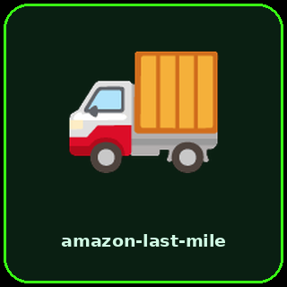
amazon-last-mile313 nodes · 2,142 edges
A week of package flow: hubs → stations → delivery zones.
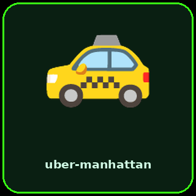
uber-manhattan370 nodes · 3,000 edges
Bipartite driver↔rider ride-matching across downtown Manhattan. semiconductor-supply
368 nodes · 739 edges
Multi-tier global chip supply chain, raw materials → products.
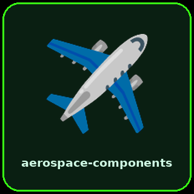
aerospace-components300 nodes · 777 edges
An aircraft's bill-of-materials + supplier network.
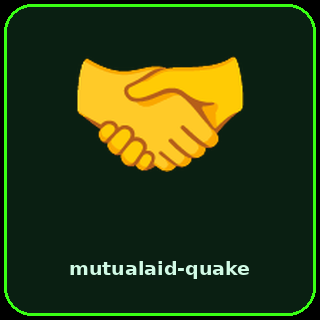
mutualaid-quake250 nodes · 2,935 edges
Neighborhood mutual aid before / during / after an earthquake.
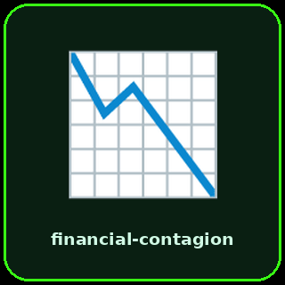
financial-contagion220 nodes · 1,701 edges
Interbank exposure network across a financial crisis.
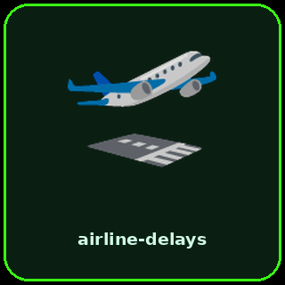
airline-delays200 nodes · 2,244 edges
Route network with delay propagation over a day.
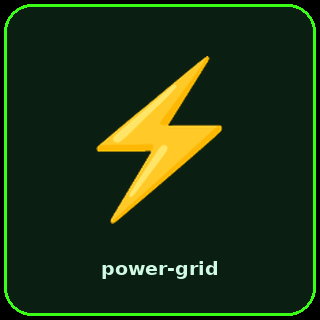
power-grid300 nodes · 422 edges
A regional electrical transmission grid.
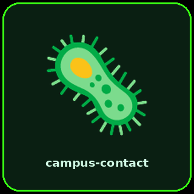
campus-contact300 nodes · 3,699 edges
Campus face-to-face contact network during an outbreak.
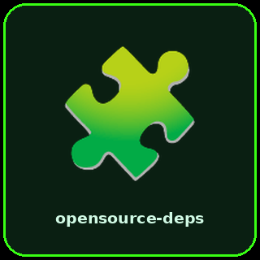
opensource-deps400 nodes · 2,251 edges
An open-source package dependency graph.
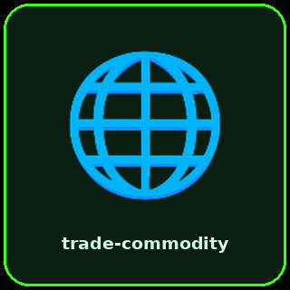
trade-commodity140 nodes · 1,210 edges
International commodity trade across a supply shock. reorg-comms
250 nodes · 7,926 edges
Corporate comms before / during / after a reorg + layoff.
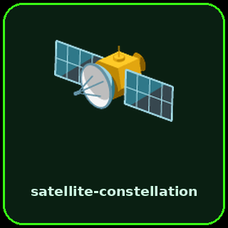
satellite-constellation298 nodes · 733 edges
Multi-operator LEO satellites, links & ground stations.
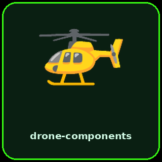
drone-components183 nodes · 617 edges
A drone's component + software dependency graph.
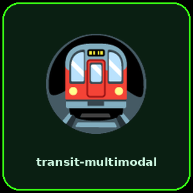
transit-multimodal152 nodes · 384 edges
A city's bus + metro network with neighborhood nodes.
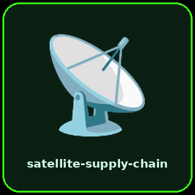
satellite-supply-chain276 nodes · 562 edges
Multi-tier satellite supply chain: materials → subsystems → programs.
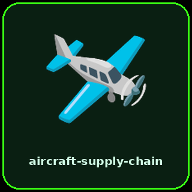
aircraft-supply-chain300 nodes · 624 edges
Multi-tier airplane supply chain: materials → systems → programs.
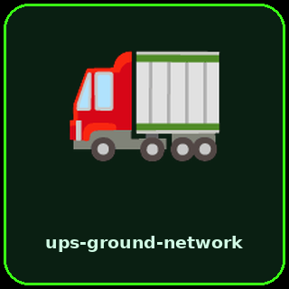
ups-ground-network149 nodes · 347 edges
Truck line-haul: plant→plant lanes (packages, trucks, distance, transit).
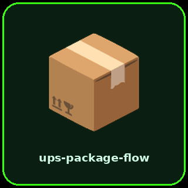
ups-package-flow149 nodes · 5,200 edges
Package-level parcels: one edge per package, with service & on-time.
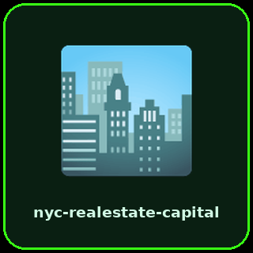
nyc-realestate-capital270 nodes · 5,044 edges
NYC real estate capital: typed investors & banks → properties, quarter by quarter.
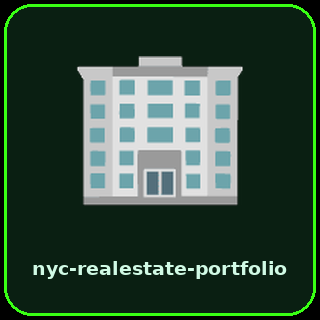
nyc-realestate-portfolio190 nodes · 1,155 edges
NYC properties linked by shared equity financing (concentration risk).
Each case study's README has a Your Project Case Study section with 3 suggested questions — starting points, not requirements.
| # | Case study | Suggested project questions (README) | Interactive lab |
|---|---|---|---|
| 01 | Build a Network | Project questions & how-to → | Lab → |
| 02 | Network Joins | Project questions & how-to → | Lab → |
| 03 | Aggregation | Project questions & how-to → | Lab → |
| 04 | Centrality & Criticality | Project questions & how-to → | Lab → |
| 05 | Supply Chain Resilience | Project questions & how-to → | Lab → |
| 06 | Network Permutation | Project questions & how-to → | Lab → |
| 07 | Routing, Counterfactuals & Optimization | Project questions & how-to → | Lab → |
| 08 | GNN by Hand | Project questions & how-to → | Lab → |
| 09 | GNN + XGBoost | Project questions & how-to → | Lab → |
| 10 | DSM Clustering | Project questions & how-to → | Lab → |
| 11 | Sampling Big Networks | Project questions & how-to → | Lab → |
What does a project report actually look like?
A real, full-length exemplar — skim it before you start. Copy the shape of the analysis, not the topic.
Raw markdown: assignments/sample-report.md
⚖ AI Use Policy What AI is for in this course (and what it isn't)
What AI is for in this course (and what it isn't).
AI is welcome for syntax and debugging, not for writing reports or answering reflections. The course is about your thinking.
You may use AI for
- Syntax help and debugging
- Explaining error messages
- Clarifying readings or lab concepts
- Generating example data
You may not use AI for
- Writing your project report prose
- Answering Learning Checks
- Writing reflections or interpretation prompts
The Course Companion (NotebookLM) is grounded in this course's own materials and is the recommended way to ask AI questions during the course. It will not write your reports for you, by design.
Self-grade before you submit 12-item checklist with copy-to-Canvas output
Run through these before you submit — most lost points are things this list would have caught. Copy writes a paste-able status block to your clipboard; drop it into the Canvas project box.
Meet the instructor for three virtual office-hour sessions over the term — informal; bring a question, a stuck spot, or a project idea. Counts toward your activities grade; sign up via the course site.